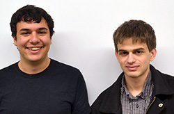

Senior Snapshots 2014: the Albert Nerken School of Engineering
May 23, 2014

What do a steel bridge, an influenza vaccine manufacturing plant, a material that deflects radar and a cell-stretching machine have in common? They are all final projects by seniors at the Albert Nerken School of Engineering. This, the second in a series of snapshots focusing on members of the class of 2014 at The Cooper Union, looks at five such seniors from each of the four degree-granting departments (civil, chemical, electrical and mechanical). They talk about their projects, as well as how they arrived at The Cooper Union, what their experiences have meant to them and where they are headed next.
Natalia Zawisny, 21, a graduating civil engineering senior, likes bridges … a lot. Maybe it comes from living on Staten Island her whole life. Why else, besides co-captaining the varsity women's basketball team, working part time (at a bridge engineering firm!) and fulfilling all her senior academic requirements, would she have added the additional project of managing the construction of an actual, 18-foot steel bridge?
Natalia, a first-generation Polish-American with a strong connection to her roots, took an early interest in building things. "I always liked putting pieces together, like Legos," she says. That, along with a talent for math, put her on a track that led to The Cooper Union, which she had learned about from a family friend.
The bridge was created as part of the National Student Steel Bridge Competition, an annual event. Natalia decided to give it a go with a group of other Cooper engineering students. "There are 40 pages of rules and specifications that are very precise and worded oddly," she says. "Each year they change the details. You have to build the lightest bridge with the least amount of deflection, or displacement under a load." When a professional manufacturer fell through on building the bridge the Cooper team decided they would do it all in-house. "We were cutting gusset plates," Natalia says, showing off the scratches she still has on her arms. They hauled the pieces out to New Jersey for the regionals but got disqualified on a technicality, as did five out of the seven contestants. "It was very sad. After loading our bridge, based on our minimal deflection, we would have placed in the top three."
Besides the bridge project Natalia had to complete a senior group project. "We are designing a wellness center that would be located on the east side of Manhattan," she says. It is a 13-story building with a gymnasium and a roof garden. A group of four students spends two semesters on their project. "We do an environmental impact assessment, foundation design, structural design, and a cost estimate. We go through the whole project as you would in the real world."
Natalia will, unsurprisingly, be continuing her study of bridges next year when she works towards a master of engineering degree at MIT. "I loved Cooper," Natalia says when asked about her experience. "If you want to do a lot, then you can. It's easy to take charge, like with the steel bridge competition. No one wanted to take control, so I just did." The experience carried over into her other passion, the women's varsity basketball team. She started as a freshman, with no prior experience in the sport. The team was only a year old. This season they had a near perfect 5 and 1 record. "It completely portrays what I was saying about Cooper. The opportunities are there and you just have to go after them and make them your own. I had a great time.”
Basketball played a major part in Joshua Mayourian's experience as well. The chemical engineering major spent all four years on the men's team. "It made my experience," he says. "I met a lot of good people. They taught me the ways of the school. They taught me ways of handling my work and balancing my life. I made great friends. They showed me how to take my athletics and apply it to academics and how to apply my academics to athletics."
Josh, a 21-year-old native of the north shore of Long Island, wasn't even going to apply to The Cooper Union. He didn't think his grades were good enough and he wanted to focus on biomedical engineering. However, when a member of the admissions staff brought him on a tour around the institution, Joshua grew confident that a biomedical engineering major wasn't necessary to achieve his goals. “While there is no such major here, there are a lot of opportunities with it. So I reached out to those opportunities and it was exactly what I wanted," Josh says.
His final project, which he completed alongside fellow senior chemical engineering students Ghazal Erfani and Ciera Lowe, dovetailed perfectly with his interests: designing a production plant to manufacture 50 million doses of influenza vaccine per year. "In order to model a plant, you have to break it down to each process," Josh says. "You have the process of making the vaccine and the process of separating the vaccine from other unwanted products. Then you have to account for each amount of energy that is released or taken as well as the amount of products or reactants that are produced. In the end we evaluated the economic and environmental effects, and we found our design to be very financially profitable while also having a very low environmental impact." The team briefly considered pitching the design to real investors, Josh says, but they decided there would be too much red tape.
After graduation, Josh will start an MD/PhD program at Icahn School of Medicine at Mount Sinai. He reflects on how he changed since coming to The Cooper Union. "In high school I didn't think I deserved to get into this school. I felt like I wasn't driven enough. But once I came to Cooper I was surrounded by people who made me work harder, become more mature and realize what I love to do. That experience, combined that with the athletics, make me love this place."
Marcus Michelen, an interdisciplinary engineering (BSE/IDE) major and Henry Kasen, an electrical engineering major, wanted to collaborate on a senior project that would be unique, hardware-based, and "state of the art." So they turned their attention to constructing an advanced material that can make a military aircraft harder to detect. Marcus, 21, from Albertson, Long Island, first planned on applying to The Cooper Union as an architecture student. His interests shifted to engineering but his school choice stayed the same. Henry Kasen, also 21, grew up at the outer edge of Brooklyn, in Mill Basin where he liked studying physics but felt he also wanted to build things. One day, on a family visit to Manhattan during his junior year in high school, he walked by the Foundation Building and looked up. "You should apply," his parents said.
So Henry met Marcus and in their senior year they created their own "metamaterial" out of copper traced in a specific shape on a printed circuit board. "It looks like a block of cheese," Henry says, "but what's special about metamaterials is that they have negative index of refraction." When electromagnetic radiation such as microwaves from a radar device strike a metamaterial, they do not bounce back but instead bend away from the source, Marcus and Henry explain. The two seniors designed their work for use on stealth airplanes. They called the project "Blue Skies."
"The way that we arrived at the project was not from an interest in defense," Marcus says. "We both really like math, and metamaterial-based design is very math heavy. To design such a device, you need to utilize a field of physics called transformation optics, which is heavily reliant on differential geometry." They created a way to make corners less visible to S-band radar, a commonly used kind, they say. "Corners act like resonators for radar," Henry says. "If you aim a radar device at a corner, you get a big response back. If you look up the Nighthawk or any other famous stealth aircraft, you will notice that the bottoms are perfectly flat because of this. Such aircraft are hard to build." So the "Blue Skies" project, theoretically, allows for greater flexibility in stealth aircraft design. But the two have decided not to pursue the project beyond their fully functioning prototype. "We are happy with what we were able to achieve, but both of us are ready to move on," Henry says.
After graduating, Marcus will attend the University of Pennsylvania for a PhD in math and Henry will start working at a telecom company in New Jersey. Both will miss the supportive culture of The Cooper Union. "The students are incredible. The people we get to work with are amazing people. It is an incredibly collaborative atmosphere," Marcus says. Henry adds, "You have very personal relationships with professors. If you want to learn something, you just go up to a professor and ask." The resulting education sometimes puts them in good company, Henry says. "We had an experience presenting our project to Exelis, a defense company, and literally everywhere we went there we were bumping into Cooper alumni."
"Coming to Cooper was actually a career change for me," says Matthew Swift, who at 31 is likely the oldest graduating senior in 2014. Born and raised in Northport, Long Island, he got his first bachelor's degree, in biology, from Cornell in 2004. Now he will have a second one in mechanical engineering. "I was working as a private tutor for high school students. I liked math and science but felt drawn to actually building things and having something tangible. I was looking to getting a master's in engineering but there are so many background requirements that you can't go from biology to getting a master's in engineering. So I applied to mechanical engineering programs, got accepted to Cooper, and was thrilled to come here."
For a final project he found something that bridges his two degrees. A researcher at the Mt. Sinai School of Medicine proposed it and funded it. "It’s a device for studying how mechanical strain affects the chemistry of cells," Matthew says. "Studies have shown that being stretched affects the way cells behave chemically. So if you are studying a heart medication in a lab on cells in a Petri dish you are failing to capture the fact that in real life those cells are being stretched and compressed." The goal was to improve an existing device that would make it easier to use and allow for a greater number of experiments to be run at the same time. In Matthew's design, a threaded clamp keeps a silicon membrane sealed like a drum skin across a metal ring. A culture can then be attached to the membrane. Up to 144 such samples fit into a frame the size of a dinner tray. This frame gets attached to a motor that carefully bounces the tray up and down over Teflon disks. The disks push up on the membrane, stretching it biaxially (in all directions), along with the cells.
The researcher at Mt. Sinai is "excited" about the advancements, Matthew says. The project is open source, with a website containing all the necessary CAD files and build instructions for anyone wishing to work on the next iteration. "I've become a tinkerer," Matthew says of his time at Cooper. "Studying engineering has given me the confidence that anything can be hacked. Working things don’t seem so much like black boxes as they used to." Over the summer he will work at a biotech startup in Brooklyn, though he insists the biology theme in his work is just a coincidence. He has also sent resumes to automotive and aerospace firms.
"I have really liked my Cooper experience," Matthew says. "Everyone is really smart. Cornell is a really good school but I never had the feeling there like, 'Wow, I'm an idiot.' But at Cooper I have sometimes had that experience. The level of talent here is pretty amazing." About his unusual decision, Matthew has no regrets. "It was starting over. I am happy with the choice, but I have had more than enough of being a student at this point."